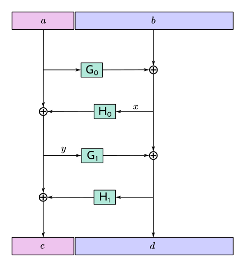
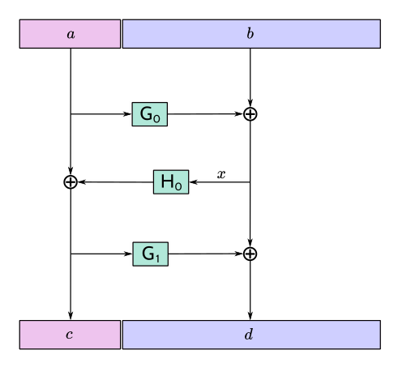

ZIP: 316
Title: Unified Addresses and Unified Viewing Keys
Owners: Daira-Emma Hopwood <daira@jacaranda.org>
Nathan Wilcox <nathan@shieldedlabs.net>
Jack Grigg <thestr4d@gmail.com>
Sean Bowe <ewillbefull@gmail.com>
Kris Nuttycombe <kris@nutty.land>
Original-Authors: Greg Pfeil
Ying Tong Lai
Credits: Taylor Hornby
Stephen Smith
Status: [Revision 0] Active, [Revision 1] Withdrawn, [Revision 2] Draft
Category: Standards / RPC / Wallet
Created: 2021-04-07
License: MIT
Discussions-To: <https://github.com/zcash/zips/issues/482>
The key words "MUST", "MUST NOT", "SHOULD", "RECOMMENDED", and "MAY" in this document are to be interpreted as described in BCP 14 1 when, and only when, they appear in all capitals.
The terms below are to be interpreted as follows:
Notation for sequences, conversions, and arithmetic operations follows the Zcash protocol specification 3.
This proposal defines Unified Addresses, which bundle together Zcash Addresses of different types in a way that can be presented as a single Address Encoding. It also defines Unified Viewing Keys, which perform a similar function for Zcash viewing keys.
Up to and including the Canopy network upgrade, Zcash supported the following Payment Address types:
Each of these has its own Address Encodings, as a string and as a QR code. (Since the QR code is derivable from the string encoding as described in 9, for many purposes it suffices to consider the string encoding.)
The Orchard proposal 28 adds a new Address type, Orchard Addresses.
The difficulty with defining new Address Encodings for each Address type, is that end-users are forced to be aware of the various types, and in particular which types are supported by a given Consumer or Recipient. In order to make sure that transfers are completed successfully, users may be forced to explicitly generate Addresses of different types and re-distribute encodings of them, which adds significant friction and cognitive overhead to understanding and using Zcash.
The goals for a Unified Address standard are as follows:
Unified Addresses specify multiple methods for payment to a Recipient's wallet. The Sender's wallet can then non-interactively select the method of payment.
Importantly, any wallet can support Unified Addresses, even when that wallet only supports a subset of payment methods for receiving and/or sending.
Despite having some similar characteristics, the Unified Address standard is orthogonal to Payment Request URIs 31 and similar schemes. Since Payment Requests encode addresses as alphanumeric strings, no change to ZIP 321 is required in order to use Unified Addresses in Payment Requests.
Wallets follow a model Interaction Flow as follows:
Reply-To memos).Encodings of the same Address may be distributed zero or more times through different means. Zero or more Consumers may import Addresses. Zero or more of those (that are Senders) may execute a Transfer. A single Sender may execute multiple Transfers over time from a single import.
Steps 1 to 5 inclusive also apply to Interaction Flows for Unified Full Viewing Keys and Unified Incoming Viewing Keys.
A Unified Address (or UA for short) combines one or more Receivers.
When new Transport Protocols are introduced to the Zcash protocol after Unified Addresses are standardized, those should introduce new Receiver Types but not different Address types outside of the UA standard. There needs to be a compelling reason to deviate from the standard, since the benefits of UA come precisely from their applicability across all new protocol upgrades.
For Revision 2, users must be able to visually distinguish addresses that risk information being leaked on-chain as a result of a transfer, from addresses that present no such risks, with the exception of pool-crossing amounts. The latter are accepted leage in the UA design, in order to achieve the desired wallet compatibility properties.
Every wallet must properly parse encodings of a Unified Address or Unified Viewing Key containing unrecognised Items.
A wallet may process unrecognised Items by indicating to the user their presence or similar information for usability or diagnostic purposes.
The Unified String Encoding is “opaque” to human readers: it does not allow visual identification of which Receivers or Receiver Types are present.
The Unified String Encoding is resilient against typos, transcription errors, cut-and-paste errors, truncation, or other likely UX hazards.
There is a well-defined Unified QR Encoding of a Unified Address (or UFVK or UIVK) as a QR code, which produces QR codes that are reasonably compact and robust.
There is a well-defined transformation between the Unified QR Encoding and Unified String Encoding of a given UA/UVK in either direction.
The Unified String Encoding fits into ZIP-321 Payment URIs 31 and general URIs without introducing parse ambiguities.
The encoding must support sufficiently many Recipient Types to allow for reasonable future expansion.
The encoding must allow all wallets to safely and correctly parse out unrecognised Receiver Types well enough to ignore them.
When executing a Transfer the Sender selects a Receiver via a Selection process.
Given a valid UA, Selection must treat any unrecognised Item as though it were absent (with the exception that Items with typecodes in the MUST-understand range may not be ignored; the Sender must reject addresses containing MUST-understand Items that they do not recognise).
Unified Addresses and Unified Viewing Keys must be able to include Receivers and Viewing Keys of experimental types, possibly alongside non-experimental ones. These experimental Receivers or Viewing Keys must be used only by wallets whose users have explicitly opted into the corresponding experiment.
A Unified Full Viewing Key (resp. Unified Incoming Viewing Key) can be used in a similar way to a Full Viewing Key (resp. Incoming Viewing Key) as described in the Zcash Protocol Specification 2.
For a Transparent P2PKH Address that is derived according to BIP 32 33 and BIP 44 38, the nearest equivalent to a Full Viewing Key or Incoming Viewing Key for a given BIP 44 account is an extended public key, as defined in the section “Extended keys” of BIP 32. Therefore, UFVKs and UIVKs should be able to include such extended public keys.
A wallet should support deriving a UIVK from a UFVK, and a Unified Address from a UIVK.
Privacy impacts of transparent or cross-pool transactions, and the associated UX issues, will be addressed in ZIP 315 (in preparation).
malformed hyperlink target.
uvf and uvi encoding prefixes for Unified Full Viewing Keys and Unified Incoming Viewing Keys respectively, drops the restriction that a UVK must contain at least one shielded Item, and adds support for P2SH Viewing Key Items using BIP 388 wallet policies 43.A Revision 0 UA/UVK is distinguished from a Revision 2 UA/UVK by its Human-Readable Part, as follows.
Let addr_prefix be:
u”, if this is a UA or UVK prior to Revision 2;zu”, if this is a shielded-only UA from Revision 2 onward.tu”, if this is a transparent-enabled UA from Revision 2 onward.The Human-Readable Parts (as defined in 41) of Unified Addresses are defined as:
test”, for Unified Addresses on Testnet.Let ivk_prefix be:
uivk” prior to Revision 2;uvi” from Revision 2 onward.Let fvk_prefix be:
uview” prior to Revision 2;uvf” from Revision 2 onward.The Human-Readable Parts of Unified Viewing Keys are defined as:
test” for Unified Incoming Viewing Keys on Testnet;test” for Unified Full Viewing Keys on Testnet.Rather than defining a Bech32 string encoding of Orchard Shielded Payment Addresses, we instead define a Unified Address format that is able to encode a set of Receivers of different types. This enables the Consumer of a Unified Address to choose the Receiver of the best type it supports, providing a better user experience as new Receiver Types are added in the future.
Assume that we are given a set of one or more Receiver Encodings for distinct types. That is, the set may optionally contain one Receiver of each of the Receiver Types in the following fixed Priority List:
If, and only if, the user of a Producer or Consumer wallet explicitly opts into an experiment as described in Experimental Usage, the specification of the experiment MAY include additions to the above Priority List (such additions SHOULD maintain the intent of preferring more recent shielded protocols).
We say that a Receiver Type is “preferred” over another when it appears earlier in this Priority List (as potentially modified by experiments).
The Sender of a payment to a Unified Address MUST use the Receiver of the most preferred Receiver Type that it supports from the set.
For example, consider a wallet that supports sending funds to Orchard Receivers, and does not support sending to any Receiver Type that is preferred over Orchard. If that wallet is given a UA that includes an Orchard Receiver and possibly other Receivers, it MUST send to the Orchard Receiver.
The raw encoding of a Unified Address is a concatenation of \((\mathtt{typecode}, \mathtt{length}, \mathtt{addr})\) encodings of the constituent Receivers, in ascending order of Typecode:
The values of the \(\mathtt{typecode}\) and \(\mathtt{length}\) fields MUST be less than or equal to \(\mathtt{0x2000000}.\) (The limitation on the total length of encodings described below imposes a smaller limit for \(\mathtt{length}\) in practice.)
A Receiver Encoding is the raw encoding of a Shielded Payment Address, or the \(160\!\) -bit script hash of a P2SH address 45, or the \(160\!\) -bit validating key hash of a P2PKH address 44.
Let padding be the Human-Readable Part of the Unified Address in US-ASCII, padded to 16 bytes with zero bytes. We append padding to the concatenated encodings, and then apply the
\(\mathsf{F4Jumble}\)
algorithm as described in Jumbling. (In order for the limitation on the
\(\mathsf{F4Jumble}\)
input size to be met, the total length of encodings MUST be at most
\(\ell^\mathsf{MAX}_M - 16\)
bytes, where
\(\ell^\mathsf{MAX}_M\)
is defined in Jumbling.) The output is then encoded with Bech32m 41, ignoring any length restrictions. This is chosen over Bech32 in order to better handle variable-length inputs.
To decode a Unified Address Encoding, a Consumer MUST use the following procedure:
padding be the Human-Readable Part, padded to 16 bytes as for encoding. If the result ends in padding, remove these 16 bytes; otherwise reject.The Human-Readable Part is as specified for a Unified Address in Revisions.
A wallet MAY allow its user(s) to configure which Receiver Types it can send to. It MUST NOT allow the user(s) to change the order of the Priority List used to choose the Receiver Type, except by opting into experiments.
Unified Full or Incoming Viewing Keys are encoded and decoded analogously to Unified Addresses. A Consumer MUST use the decoding procedure from the previous section. For Viewing Keys, a Consumer will normally take the union of information provided by all contained Receivers, and therefore the Priority List defined in the previous section is not used.
For each FVK Type or IVK Type currently defined in this specification, the same Typecode is used as for the corresponding Receiver Type in a Unified Address. Additional FVK Types and IVK Types MAY be defined in future, and these will not necessarily use the same Typecode as the corresponding Unified Address.
The following FVK or IVK Encodings are used in place of the \(\mathtt{addr}\) field:
Key placeholders in the descriptor template use the @N notation defined by BIP 388. In order to preserve the diversifiability properties of UVKs, in a UFVK, the template MUST use the /** multipath notation for each key placeholder (indicating derivation of both external and internal addresses). In a UIVK, the template MUST use the /* notation instead (indicating derivation of external addresses only). To produce the key information vector for a UIVK, it is necessary to perform an additional step of non-hardened derivation from the keys provided in the UFVK's key information vector using the external child path index (index 0). Producers MUST encode
\(\mathsf{n_keys}\)
in a deterministic order, which may vary depending upon the template in use. For ZIP 48 keys, this is lexicographic by chain code and pubkey.
The number of @N key placeholders in the descriptor template MUST equal
\(\mathtt{n\_keys}.\)
Consumers MUST reject P2SH Viewing Key Items for which this does not hold, or for which the descriptor template is not a valid BIP 388 descriptor template, or does not satisfy the above requirements on the use of /** or /* multipath notation.
The Human-Readable Part is as specified for a Unified Viewing Key in Revisions.
The design of address derivation is designed to maintain unlinkability between addresses derived from the same UIVK, to the extent possible. (This is only partially achieved if the UA contains a Transparent P2PKH Address, since the on-chain transaction graph can potentially be used to link transparent addresses.)
Note that it may be difficult to retain this property for Metadata Items, and this should be taken into account in the design of such Items.
zu prefix MUST NOT contain any transparent Items (currently Typecodes
\(\mathtt{0x00}\)
and
\(\mathtt{0x01}\!\)
). Consumers MUST reject addresses that violate this restriction.The original rationale for this restriction was that the existing P2SH and P2PKH transparent-only address formats, and the existing P2PKH extended public key format, sufficed for representing viewing keys with transparent Items, and were already supported by the existing ecosystem.
However, as of Revision 2 there are uses for transparent-only UVKs that are not covered by the existing formats. In particular, they allow the representation of viewing keys for P2SH addresses, which is an important use case with the advent of ZIP 48 25. In addition, transparent-only viewing keys can use Metadata Items to represent expiration heights/dates as described in Address Expiration Metadata that is useful in the generation of tu-prefixed addresses.
Duplicate implicit target name: "rationale for removing transparent receivers from zu unified addresses".
A common complaint about Revision 0 Unified Addresses was that there was no way for a user to visually distinguish a Unified Address that allowed the receipt of transparent funds from one that did not; Transparent addresses do not provide any privacy protection, and including them in UAs created a risk that Senders would fall back to transparent transfers even when the Recipient supports shielded protocols. Historically, the z address prefix indicated to the user that no element of the recipient address would cause information about the recipient to be leaked on-chain by transfers to that address. Revision 2 restores this property.
Transparent Items are still permitted in Unified Viewing Keys because viewing keys serve a different purpose: they allow observation of transaction activity across all pools, including transparent. A UFVK or UIVK that includes a transparent component allows the holder to derive transparent addresses for scanning purposes and to track transparent funds associated with the same account.
The rationale for requiring Items to be canonically ordered by Typecode is that it enables implementations to use an in-memory representation that discards ordering, while retaining the same round-trip serialization of a UA/UVK (provided that unrecognised Items are retained).
Showing fewer than 20 characters of the String Encoding of a UA/UVK would potentially allow practical attacks in which the adversary constructs another UA/UVK that matches in the characters shown. When a UA/UVK is abridged it is preferable to show a prefix rather than some other part, both for a more consistent user experience across wallets, and because security analysis of the cost of partial UA/UVK string matching attacks is more complicated if checksum characters are included in the characters that are compared.
To analyze the difficulty of partial matching attacks, we must subtract the length of the HRP and the "1" separator from the 20 characters. The longest HRP defined for a Mainnet UA/UVK in this specification for is "uview" for Revision 0 UFVKs — and so in the worst case only 14 characters, corresponding to 70 bits, of the jumbled Mainnet UA/UVK data will be present. (We are not particularly concerned about attacks on Testnet UA/UVKs.) This implies an easier partial matching attack than Zcash's usual target security level against classical attacks of \(2^{125}\!\) . Note also that multi-target attacks are possible. 20 characters should therefore be considered an absolute minimum, and wallet implementors may wish to show a larger number of initial characters for abridged UA/UVKs to enable users to defend against partial matching attacks up to a higher difficulty for the adversary.
Note that if different sources show different substrings of a UA/UVK then users are only able to compare the characters that are common to all of these substrings, and so it is only initial characters that contribute to satisfying this requirement.
It is intended that new Receiver Types and Viewing Key Types SHOULD be introduced either by a modification to this ZIP or by a new ZIP, in accordance with the ZIP Process 15.
For experimentation prior to proposing a ZIP, experimental types MAY be added using the reserved Typecodes \(\mathtt{0xFFFA}\) to \(\mathtt{0xFFFF}\) inclusive. This provides for six simultaneous experiments, which can be referred to as experiments A to F. This should be sufficient because experiments are expected to be reasonably short-term, and should otherwise be either standardized in a ZIP (and allocated a Typecode outside this reserved range) or discontinued.
New types SHOULD maintain the same distinction between FVK and IVK authority as existing types, i.e. an FVK is intended to give access to view all transactions to and from the address, while an IVK is intended to give access only to view incoming payments (as opposed to change).
Typecodes \(\mathtt{0xC0}\) to \(\mathtt{0xFC}\) inclusive are reserved to indicate Metadata Items other than Receivers or Viewing Keys. These Items MAY affect the overall interpretation of the UA/UVK (for example, by specifying an expiration date).
As of Revision 2 of this ZIP, the subset of Metadata Typecodes in the range \(\mathtt{0xE0}\) to \(\mathtt{0xFC}\) inclusive are designated as "MUST-understand": if a Consumer is unable to recognise the meaning of a Metadata Item with a Typecode in this range, then it MUST regard the entire UA/UVK as unsupported and not process it further.
A Revision 0 UA/UVK (determined by its HRP as specified in Revisions) MUST NOT include any Metadata Items with a MUST-understand Typecode; a Consumer MUST reject as invalid any UA/UVK that violates this requirement.
Since Metadata Items are not Receivers, they MUST NOT be selected by a Sender when choosing a Receiver to send to, and since they are not Viewing Keys, they MUST NOT provide additional authority to view information about transactions.
New Metadata Types SHOULD be introduced either by a modification to this ZIP or by a new ZIP, in accordance with the ZIP Process 15.
A Consumer implementing this ZIP prior to Revision 2 will not recognise the Human-Readable Parts beginning with “zu” that mark a Revision 2 UA/UVK. So if a UA/UVK that includes MUST-understand Typecodes is required to use these Revision 2 HRPs, this will ensure that the MUST-understand specification is correctly enforced even for such implementations.
As of Revision 2, Typecodes \(\mathtt{0xE0}\) and \(\mathtt{0xE1}\) are reserved for optional address expiry metadata. A producer MAY choose to generate Unified Addresses containing either or both of the following Metadata Item Types, or none.
The value of a \(\mathtt{0xE0}\) item MUST be an unsigned 32-bit integer in little-endian order specifying the Address Expiry Height, a block height of the Zcash chain associated with the UA/UVK. A Unified Address containing metadata Typecode \(\mathtt{0xE0}\) MUST be considered expired when the height of the Zcash chain is greater than this value.
The value of a \(\mathtt{0xE1}\) item MUST be an unsigned 64-bit integer in little-endian order specifying a Unix Epoch Time, hereafter referred to as the Address Expiry Time. A Unified Address containing Metadata Typecode \(\mathtt{0xE1}\) MUST be considered expired when the current time is after the Address Expiry Time.
A Sender that supports Revision 2 of this specification MUST set a non-zero nExpiryHeight field in transactions it creates that are sent to a Unified Address that defines an Address Expiry Height. If the nExpiryHeight normally constructed by the Sender would be greater than the Address Expiry Height, then the transaction MUST NOT be sent. If only an Address Expiry Time is specified, then the Sender SHOULD choose a value for nExpiryHeight such that the transaction will expire no more than 24 hours after the current time. If both
\(\mathtt{0xE0}\)
and
\(\mathtt{0xE1}\)
Metadata Items are present, then both restrictions apply.
If a Sender sends to multiple Unified Addresses in the same transaction, then all of the Address Expiry constraints imposed by the individual addresses apply.
If a wallet user attempts to send to an expired address, the error presented to the user by the wallet SHOULD include a suggestion that the user should attempt to obtain a currently-valid address for the intended recipient. A wallet MUST NOT send to an address that it knows to have expired.
Address expiration imposes no constraints on the Producer of an address. A Producer MAY generate multiple Unified Addresses with the same Receivers but different expiration metadata and/or any number of distinct Diversified Unified Addresses with the same or different expiry metadata, in any combination. Note that although changes to metadata will result in a visually distinct address, such updated addresses will be directly linkable to the original addresses because they share the same Receivers.
When deriving a UIVK from a UFVK containing Typecodes \(\mathtt{0xE0}\) and/or \(\mathtt{0xE1}\!\) , these Metadata Items MUST be retained unmodified in the derived UIVK.
When deriving a Unified Address from a UFVK or UIVK containing a Metadata Item having Typecode \(\mathtt{0xE0}\!\) , the derived Unified Address MUST contain a Metadata Item having Typecode \(\mathtt{0xE0}\) such that the Address Expiry Height of the resulting address is less than or equal to the Expiry Height of the viewing key.
When deriving a Unified Address from a UFVK or UIVK containing a Metadata Item having Typecode \(\mathtt{0xE1}\!\) , the derived Unified Address MUST contain a Metadata Item having Typecode \(\mathtt{0xE1}\) such that the Address Expiry Time of the resulting address is less than or equal to the Expiry Time of the viewing key.
Producers of Diversified Unified Addresses should be aware that the expiration metadata could potentially be used to link addresses from the same source. Normally, if Diversified Unified Addresses derived from the same UIVK contain only Sapling and/or Orchard Receivers and no Metadata Items, they will be unlinkable as described in 8; this property does not hold when Metadata Items are present. It is RECOMMENDED that when deriving Unified Addresses from a UFVK or UIVK containing expiry metadata that the Expiry Height and Expiry Time of each distinct address vary from one another, so as to reduce the likelihood that addresses may be linked via their expiry metadata.
The intent of this specification is that Consumers of Unified Addresses must not send to expired addresses. If only an Address Expiry Time is specified, a transaction to the associated address could be mined after the Address Expiry Time within a 24-hour window.
The reason that the transaction MUST NOT be sent when its nExpiryHeight as normally constructed is greater than the Address Expiry Height is to avoid unnecessary information leakage in that field about which address was used as the destination. If a sender were to instead use the expiry height to directly set the nExpiryHeight field, this would leak the expiry information of the destination address, which may then be identifiable.
When honoring an Address Expiry Time, the reason that a sender SHOULD choose a nExpiryHeight that is expected to occur within 24 hours of the time of transaction construction is to, when possible, ensure that the expiry time is respected to within a day. Address Expiry Times are advisory and do not represent hard bounds because computer clocks often disagree, but every effort should be made to ensure that transactions expire instead of being mined more than 24 hours after a recipient address's expiry time. When chain height information is available to the Sender, it is both permissible and advisable to set this bound more tightly; a common expiry delta used by many wallets is 40 blocks from the current chain tip, as suggested in ZIP 203 26.
Duplicate implicit target name: "typecode registry".
The following table specifies the full range of Typecodes and indicates which address types permit each Typecode. Typecode range entries in the table below are to be interpreted as end-inclusive.
Producers MUST NOT include Items with Typecodes not permitted for the address type being produced, and MUST NOT generate UA/UVKs containing Items with typecodes that are Unassigned.
The guiding principle for zu addresses is that a zu address MUST NOT contain any Items whose interpretation in transaction construction could result in an unprivileged observer of the chain being able to distinguish transactions sent to addresses containing such Items from transactions sent to addresses that do not.
In contrast, a tu address MAY contain items whose interpretation in transaction construction could result in additional information being leaked on-chain. As such a user giving out a tu address should recognise that they may be giving up some privacy in transactions received at that address.
If a new Metadata Item type should not be allowed in zu addresses, it MUST be assigned in the MUST-understand Metadata range.
Experimental Typecodes (
\(\mathtt{0xFFFA}\)
to
\(\mathtt{0xFFFF}\!\)
) are permitted at the discretion of wallets that have opted into the corresponding experiment as described in Experimental Usage; for zu addresses, such wallets are responsible for ensuring that the experiment does not compromise the privacy properties of zu addresses.
+-------------------+--------------------------------------+----+--------+--------+ | Typecode | Description | R0 | R2 zu | R2 tu | +===================+======================================+====+========+========+ | 0x00 | Transparent P2PKH | ✅ | ❌ | ✅ | +-------------------+--------------------------------------+----+--------+--------+ | 0x01 | Transparent P2SH | ✅ | ❌ | ✅ | +-------------------+--------------------------------------+----+--------+--------+ | 0x02 | Sapling | ✅ | ✅ | ✅ | +-------------------+--------------------------------------+----+--------+--------+ | 0x03 | Orchard | ✅ | ✅ | ✅ | +-------------------+--------------------------------------+----+--------+--------+ | 0x04..=0xBF | Unassigned | ❌ | ❌ | ❌ | +-------------------+--------------------------------------+----+--------+--------+ | 0xC0..=0xDF | Non-MUST-understand Metadata | ❌ | ❌ | ❌ | +-------------------+--------------------------------------+----+--------+--------+ | 0xE0 | Address Expiry Height | ❌ | ✅ | ✅ | +-------------------+--------------------------------------+----+--------+--------+ | 0xE1 | Address Expiry Time | ❌ | ✅ | ✅ | +-------------------+--------------------------------------+----+--------+--------+ | 0xE2..=0xFC | Unassigned MUST-understand Metadata | ❌ | ❌ | ❌ | +-------------------+--------------------------------------+----+--------+--------+ | 0xFD..=0xFFF9 | Unassigned | ❌ | ❌ | ❌ | +-------------------+--------------------------------------+----+--------+--------+ | 0xFFFA..=0xFFFF | Experimental | ✅ | [1] | ✅ | +-------------------+--------------------------------------+----+--------+--------+
[1] See note above regarding experimental typecodes in zu addresses.
Additions to this registry are made via 2xxx-series ZIPs. This table will be updated by the ZIP Editors when such a ZIP transitions to Proposed status.
In addition to external addresses suitable for giving out to Senders, a wallet typically requires addresses for internal operations such as change and auto-shielding.
We desire the following properties for viewing authority of both shielded and transparent key trees:
For shielded keys, these properties are achieved by the one-wayness of \(\mathsf{PRF^{expand}}\) and of \(\mathsf{CRH^{ivk}}\) or \(\mathsf{Commit^{ivk}}\) (for Sapling and Orchard respectively). Derivation of an internal shielded FVK from an external shielded FVK is specified in the "Sapling internal key derivation" 19 and "Orchard internal key derivation" 21 sections of ZIP 32.
To satisfy the above properties for transparent (P2PKH) keys, we derive the external and internal \(\mathsf{ovk}\) components from the transparent FVK \((\mathsf{c}, \mathsf{pk})\) (described in Encoding of Unified Full/Incoming Viewing Keys) as follows:
Since an external P2PKH FVK encodes the chain code and public key at the Account level, we can derive both external and internal child keys from it, as described in BIP 44 39. It is possible to derive an internal P2PKH FVK from the external P2PKH FVK (i.e. its parent) without having the external spending key, because child derivation at the Change level is non-hardened.
As of Revision 2, to satisfy the above properties for transparent P2SH keys, we derive the external and internal \(\mathsf{ovk}\) components from the P2SH FVK (described in P2SH Viewing Key Items) as follows:
Since a P2SH FVK encodes the keys, with their chain codes, at a level from which both external and internal child keys can be derived (via the /** multipath notation in the descriptor template), we can derive both external and internal P2SH addresses without having any spending key, because child derivation at the Change and Index levels is non-hardened.
As a consequence of the specification in MUST-understand Typecodes, as of Revision 2 a Consumer of a UFVK MUST understand the meaning of all "MUST-understand" Metadata Item Typecodes present in the UFVK in order to derive a UIVK from it.
If the source UFVK is Revision 2 then the derived UIVK SHOULD be Revision 2; if the source UFVK includes any Metadata Items then the derived UIVK MUST be Revision 2.
For Metadata Items recognised by the Consumer, the processing of the Item when deriving a UIVK is specified in the section or ZIP describing that Item.
The following derivations are applied to each component FVK:
/** in the descriptor template with /*.In each case, the Typecode remains the same as in the FVK.
Items (including Metadata Items that are not "MUST-understand") that are unrecognised by a given Consumer, or that are specified in experiments that the user has not opted into (see Experimental Usage), MUST be dropped when the Consumer derives a UIVK from a UFVK.
As a consequence of the specification in MUST-understand Typecodes, as of Revision 2 a Consumer of a UIVK MUST understand the meaning of all "MUST-understand" Metadata Item Typecodes present in the UIVK in order to derive a Unified Address from it.
If the source UIVK is Revision 2 then the derived Unified Address SHOULD be Revision 2; if the source UIVK includes any Metadata Items then the derived Unified Address MUST be Revision 2.
For Metadata Items recognised by the Consumer, the processing of the Item when deriving a Unified Address is specified in the section or ZIP describing that Item.
To derive a Unified Address from a UIVK we need to choose a diversifier index, which MUST be valid for all of the Viewing Key Types in the UIVK. That is,
Note: A diversifier index of 0 may not generate a valid Sapling diversifier (with probability \(1/2\!\) ). Some wallets (either prior to the deployment of ZIP 316, in violation of the above requirement, or because they do not include a Sapling component in their UAs) always generate a Transparent P2PKH address at diversifier index 0. Therefore, all Zcash wallets, whether or not they support Unified Addresses, MUST assume that there may be transparent funds associated with diversifier index 0 for each ZIP 32 account, even in cases where the wallet implementation would not generate a Unified Address with that index for a given account. This is necessary to ensure reliable recovery of funds if key material is imported between wallets.
The following derivations are applied to each component IVK using the diversifier index:
@N placeholder with the corresponding derived public key, evaluating the resulting output descriptor 42 to obtain the output script, and computing the HASH160 of the serialized script to produce the P2SH Receiver Encoding.Items (including Metadata Items that are not "MUST-understand") that are unrecognised by a given Consumer, or that are specified in experiments that the user has not opted into (see Experimental Usage), MUST be dropped when the Consumer derives a Unified Address from a UIVK.
See Address Expiration Metadata for discussion of potential linking of Diversified Unified Addresses via their metadata.
When a Sender constructs a transaction that creates Sapling or Orchard notes, it uses an outgoing viewing key, as described in 6 and 7, to encrypt an outgoing ciphertext. Decryption with the outgoing viewing key allows recovering the sent note plaintext, including destination address, amount, and memo. The intention is that this outgoing viewing key should be associated with the source of the funds.
However, the specification of which outgoing viewing key should be used is left somewhat open in 6 and 7; in particular, it was unclear whether transfers should be considered as being sent from an address, or from a ZIP 32 account 22. The adoption of multiple shielded protocols that support outgoing viewing keys (i.e. Sapling and Orchard) further complicates this question, since from NU5 activation, nothing at the consensus level prevents a wallet from spending both Sapling and Orchard notes in the same transaction. (Recommendations about wallet usage of multiple pools will be given in ZIP 315 30.)
Here we refine the protocol specification in order to allow more precise determination of viewing authority for UFVKs.
A Sender will attempt to determine a "sending Account" for each transfer. The preferred approach is for the API used to perform a transfer to directly specify a sending Account. Otherwise, if the Sender can ascertain that all funds used in the transfer are from addresses associated with some Account, then it SHOULD treat that as the sending Account. If not, then the sending Account is undetermined.
The Sender also determines a "preferred sending protocol" —one of "transparent", "Sapling", or "Orchard"— corresponding to the most preferred Receiver Type (as given in Encoding of Unified Addresses) of any funds sent in the transaction.
If the sending Account has been determined, then the Sender SHOULD use the external or internal \(\mathsf{ovk}\) (according to the type of transfer), as specified by the preferred sending protocol, of the full viewing key for that Account (i.e. at the ZIP 32 Account level).
If the sending Account is undetermined, then the Sender SHOULD choose one of the addresses, restricted to addresses for the preferred sending protocol, from which funds are being sent (for example, the first one for that protocol), and then use the external or internal \(\mathsf{ovk}\) (according to the type of transfer) of the full viewing key for that address.
Security goal (near second preimage resistance):
Security goal (nonmalleability):
There is a generic brute force attack against near second preimage resistance. The adversary generates UAs / UVKs at random with known keys, until one has an encoding that partially collides with one of the \(q\) targets. It may be possible to improve on this attack by making use of properties of checksums, etc.
The generic attack puts an upper bound on the achievable security: if it takes work \(w\) to produce and verify a UA/UVK, and the size of the character set is \(c,\) then the generic attack costs \(\sim \frac{w \cdot c^{n+m}}{q}.\)
There is also a generic brute force attack against nonmalleability. The adversary modifies the target UA/UVK slightly and computes the corresponding decoding, then repeats until the decoding is valid and also useful to the adversary (e.g. it would lead to the Sender using a Transparent Address). With \(w\) defined as above, the cost is \(w/p\) where \(p\) is the probability that a random decoding is of the required form.
We use an unkeyed 4-round Feistel construction to approximate a random permutation. (As explained below, 3 rounds would not be sufficient.)
Let \(H_i\) be a hash personalized by \(i,\) with maximum output length \(\ell_H\) bytes. Let \(G_i\) be a XOF (a hash function with extendable output length) based on \(H,\) personalized by \(i.\)
Define \(\ell^\mathsf{MAX}_M = (2^{16} + 1) \cdot \ell_H.\) For the instantiation using BLAKE2b defined below, \(\ell^\mathsf{MAX}_M = 4194368.\)
Given input \(M\) of length \(\ell_M\) bytes such that \(38 \leq \ell_M \leq \ell^\mathsf{MAX}_M,\) define \(\mathsf{F4Jumble}(M)\) by:
The inverse function \(\mathsf{F4Jumble}^{-1}\) is obtained in the usual way for a Feistel construction, by observing that \(r = p \oplus q\) implies \(p = r \oplus q.\)
The first argument to BLAKE2b below is the personalization.
We instantiate \(H_i(u)\) by \(\mathsf{BLAKE2b‐}(8\ell_L)(\texttt{“UA\_F4Jumble\_H”} \,||\,\) \([i, 0, 0], u),\) with \(\ell_H = 64.\)
We instantiate \(G_i(u)\) as the first \(\ell_R\) bytes of the concatenation of \([\mathsf{BLAKE2b‐}512(\texttt{“UA\_F4Jumble\_G”} \,||\, [i] \,||\,\) \(\mathsf{I2LEOSP}_{16}(j), u) \text{ for } j \text{ from}\) \(0 \text{ up to } \mathsf{ceiling}(\ell_R/\ell_H)-1].\)

(In practice the lengths \(\ell_L\) and \(\ell_R\) will be roughly the same until \(\ell_M\) is larger than \(128\) bytes.)
In order to prevent the generic attack against nonmalleability, there needs to be some redundancy in the encoding. Therefore, the Producer of a Unified Address, UFVK, or UIVK appends the HRP, padded to 16 bytes with zero bytes, to the raw encoding, then applies \(\mathsf{F4Jumble}\) before encoding the result with Bech32m.
The Consumer rejects any Bech32m-decoded byte sequence that is less than 38 bytes or greater than \(\ell^\mathsf{MAX}_M\) bytes; otherwise it applies \(\mathsf{F4Jumble}^{-1}.\) It rejects any result that does not end in the expected 16-byte padding, before stripping these 16 bytes and parsing the result.
A minimum input length to \(\mathsf{F4Jumble}^{-1}\) of 38 bytes allows for the minimum size of a UA/UVK Item encoding to be 22 bytes including the typecode and length, taking into account 16 bytes of padding. This allows for a UA containing only a Transparent P2PKH Receiver:
\(\ell^\mathsf{MAX}_M\) bytes is the largest input/output size supported by \(\mathsf{F4Jumble}.\)
Allowing only a Transparent P2PKH Receiver is consistent with dropping the requirement to have at least one shielded Item in Revision 2 UA/UVKs (see rationale).
Note that Revision 0 of this ZIP specified a minimum input length to \(\mathsf{F4Jumble}^{-1}\) of 48 bytes. Since there were no sets of UA/UVK Item Encodings valid in Revision 0 to which a byte sequence (after removal of the 16-byte padding) of length between 22 and 31 bytes inclusive could be parsed, the difference between the 38 and 48-byte restrictions is not observable, other than potentially affecting which error is reported. A Consumer supporting Revision 2 of this specification MAY therefore apply either the 48-byte or 38-byte minimum to Revision 0 UA/UVKs.
A 3-round unkeyed Feistel, as shown, is not sufficient:

Suppose that an adversary has a target input/output pair \((a \,||\, b, c \,||\, d),\) and that the input to \(H_0\) is \(x.\) By fixing \(x,\) we can obtain another pair \(((a \oplus t) \,||\, b', (c \oplus t) \,||\, d')\) such that \(a \oplus t\) is close to \(a\) and \(c \oplus t\) is close to \(c.\) ( \(\!b'\) and \(d'\) will not be close to \(b\) and \(d,\) but that isn't necessarily required for a valid attack.)
A 4-round Feistel thwarts this and similar attacks. Defining \(x\) and \(y\) as the intermediate values in the first diagram above:
Note that the size of each piece is at least 19 bytes.
It would be possible to make an attack more expensive by making the work done by a Producer more expensive. (This wouldn't necessarily have to increase the work done by the Consumer.) However, given that Unified Addresses may need to be produced on constrained computing platforms, this was not considered to be beneficial overall.
The padding contains the HRP so that the HRP has the same protection against malleation as the rest of the address. This may help against cross-network attacks, or attacks that confuse addresses with viewing keys.
The cost is dominated by 4 BLAKE2b compressions for \(\ell_M \leq 128\) bytes. A Revision 0 UA containing a Transparent Address, a Sapling Address, and an Orchard Address, would have \(\ell_M = 128\) bytes. A UA containing a Sapling Address and an Orchard Address would have \(\ell_M = 106\) bytes.
For longer UAs (when other Receiver Types are added) or UVKs, the cost increases to 6 BLAKE2b compressions for \(128 < \ell_M \leq 192,\) and 10 BLAKE2b compressions for \(192 < \ell_M \leq 256,\) for example. The maximum cost for which the algorithm is defined would be 196608 BLAKE2b compressions at \(\ell_M = \ell^\mathsf{MAX}_M\) bytes.
A naïve implementation of the \(\mathsf{F4Jumble}^{-1}\) function would require roughly \(\ell_M\) bytes plus the size of a BLAKE2b hash state. However, it is possible to reduce this by streaming the \(d\) part of the jumbled encoding three times from a less memory-constrained device. It is essential that the streamed value of \(d\) is the same on each pass, which can be verified using a Message Authentication Code (with key held only by the Consumer) or collision-resistant hash function. After the first pass of \(d\!\) , the implementation is able to compute \(y;\) after the second pass it is able to compute \(a;\) and the third allows it to compute and incrementally parse \(b.\) The maximum memory usage during this process would be 128 bytes plus two BLAKE2b hash states.
Since this streaming implementation of \(\mathsf{F4Jumble}^{-1}\) is quite complicated, we do not require all Consumers to support streaming. If a Consumer implementation cannot support UAs / UVKs up to the maximum length, it MUST nevertheless support UAs / UVKs with \(\ell_M\) of at least \(256\) bytes. Note that this effectively defines two conformance levels to this specification. A full implementation will support UAs / UVKs up to the maximum length.
BLAKE2b, with personalization and variable output length, is the only external dependency.
Revision 0:
Revision 1 (Withdrawn):
Revision 2 (Draft):
The authors would like to thank Benjamin Winston, Zooko Wilcox, Francisco Gindre, Marshall Gaucher, Joseph Van Geffen, Brad Miller, Deirdre Connolly, Teor, Eran Tromer, Conrado Gouvêa, and Marek Bielik for discussions on the subject of Unified Addresses and Unified Viewing Keys.
`Revision 1`_ of this specification originally defined addresses with capabilities essentially equivalent to the tu encoding specified in Revision 2; however, this specification was rejected by the community on the grounds that users should be able to gain some sense of the privacy implications of an address that they are sharing by visual inspection, which unified addresses inhibit in general. Revision 2 proposes the zu and tu prefixes to provide such visual distinguisability while retaining the benefits related to supporting protocol upgrades and expiry metadata for both shielded-only and transparent-transfer-permitting address types.
| 1 | Information on BCP 14 — "RFC 2119: Key words for use in RFCs to Indicate Requirement Levels" and "RFC 8174: Ambiguity of Uppercase vs Lowercase in RFC 2119 Key Words" |
|---|
| 2 | Zcash Protocol Specification, Version 2023.4.0 or later |
|---|
| 3 | Zcash Protocol Specification, Version 2023.4.0. Section 2: Notation |
|---|
| 4 | Zcash Protocol Specification, Version 2023.4.0. Section 4.2.2: Sapling Key Components |
|---|
| 5 | Zcash Protocol Specification, Version 2023.4.0. Section 4.2.3: Orchard Key Components |
|---|
| 6 | Zcash Protocol Specification, Version 2023.4.0. Section 4.7.2: Sending Notes (Sapling) |
|---|
| 7 | Zcash Protocol Specification, Version 2023.4.0. Section 4.7.3: Sending Notes (Orchard) |
|---|
| 8 | Zcash Protocol Specification, Version 2023.4.0. Section 5.4.1.6: DiversifyHash^Sapling and DiversifyHash^Orchard Hash Functions |
|---|
| 9 | Zcash Protocol Specification, Version 2023.4.0. Section 5.6: Encodings of Addresses and Keys |
|---|
| 10 | Zcash Protocol Specification, Version 2023.4.0. Section 5.6.3.1: Sapling Payment Addresses |
|---|
| 11 | Zcash Protocol Specification, Version 2023.4.0. Section 5.6.4.2: Orchard Raw Payment Addresses |
|---|
| 12 | Zcash Protocol Specification, Version 2023.4.0. Section 5.6.4.3: Orchard Raw Incoming Viewing Keys |
|---|
| 13 | Zcash Protocol Specification, Version 2023.4.0. Section 5.6.4.4: Orchard Raw Full Viewing Keys |
|---|
| 14 | Zcash Protocol Specification, Version 2025.6.0 [NU6.1 proposal]. Section 10: Change History — 2025.6.0 |
|---|
| 15 | ZIP 0: ZIP Process |
|---|
| 16 | ZIP 32: Shielded Hierarchical Deterministic Wallets — Sapling helper functions |
|---|
| 17 | ZIP 32: Shielded Hierarchical Deterministic Wallets — Sapling extended full viewing keys |
|---|
| 18 | ZIP 32: Shielded Hierarchical Deterministic Wallets — Sapling diversifier derivation |
|---|
| 19 | ZIP 32: Shielded Hierarchical Deterministic Wallets — Sapling internal key derivation |
|---|
| 20 | ZIP 32: Shielded Hierarchical Deterministic Wallets — Orchard child key derivation |
|---|
| 21 | ZIP 32: Shielded Hierarchical Deterministic Wallets — Orchard internal key derivation |
|---|
| 22 | ZIP 32: Shielded Hierarchical Deterministic Wallets — Specification: Wallet usage |
|---|
| 23 | ZIP 32: Shielded Hierarchical Deterministic Wallets — Sapling key path |
|---|
| 24 | ZIP 32: Shielded Hierarchical Deterministic Wallets — Orchard key path |
|---|
| 25 | ZIP 48: Transparent Multisig Wallets |
|---|
| 26 | ZIP 203: Transaction Expiry — Changes for Blossom |
|---|
| 27 | ZIP 211: Disabling Addition of New Value to the Sprout Chain Value Pool |
|---|
| 28 | ZIP 224: Orchard Shielded Protocol |
|---|
| 29 | ZIP 312: FROST for Spend Authorization Multisignatures |
|---|
| 30 | ZIP 315: Best Practices for Wallet Handling of Multiple Pools |
|---|
| 31 | ZIP 321: Payment Request URIs |
|---|
| 32 | ZIP 2005: Orchard Quantum Recoverability — Usage with FROST |
|---|
| 33 | BIP 32: Hierarchical Deterministic Wallets |
|---|
| 34 | BIP 32: Hierarchical Deterministic Wallets — Conventions |
|---|
| 35 | BIP 32: Hierarchical Deterministic Wallets — Key identifiers |
|---|
| 36 | BIP 32: Hierarchical Deterministic Wallets — Serialization Format |
|---|
| 37 | BIP 32: Hierarchical Deterministic Wallets — Child key derivation (CKD) functions: Public parent key → public child key |
|---|
| 38 | BIP 44: Multi-Account Hierarchy for Deterministic Wallets |
|---|
| 39 | BIP 44: Multi-Account Hierarchy for Deterministic Wallets — Path levels: Change |
|---|
| 40 | BIP 44: Multi-Account Hierarchy for Deterministic Wallets — Path levels: Index |
|---|
| 41 | BIP 350: Bech32m format for v1+ witness addresses |
|---|
| 42 | BIP 380: Output Script Descriptors General Operation |
|---|
| 43 | BIP 388: Wallet Policies for Descriptor Wallets |
|---|
| 44 | Transactions: P2PKH Script Validation — Bitcoin Developer Guide |
|---|
| 45 | Transactions: P2SH Scripts — Bitcoin Developer Guide |
|---|
| 46 | Variable length integer. Bitcoin Wiki |
|---|